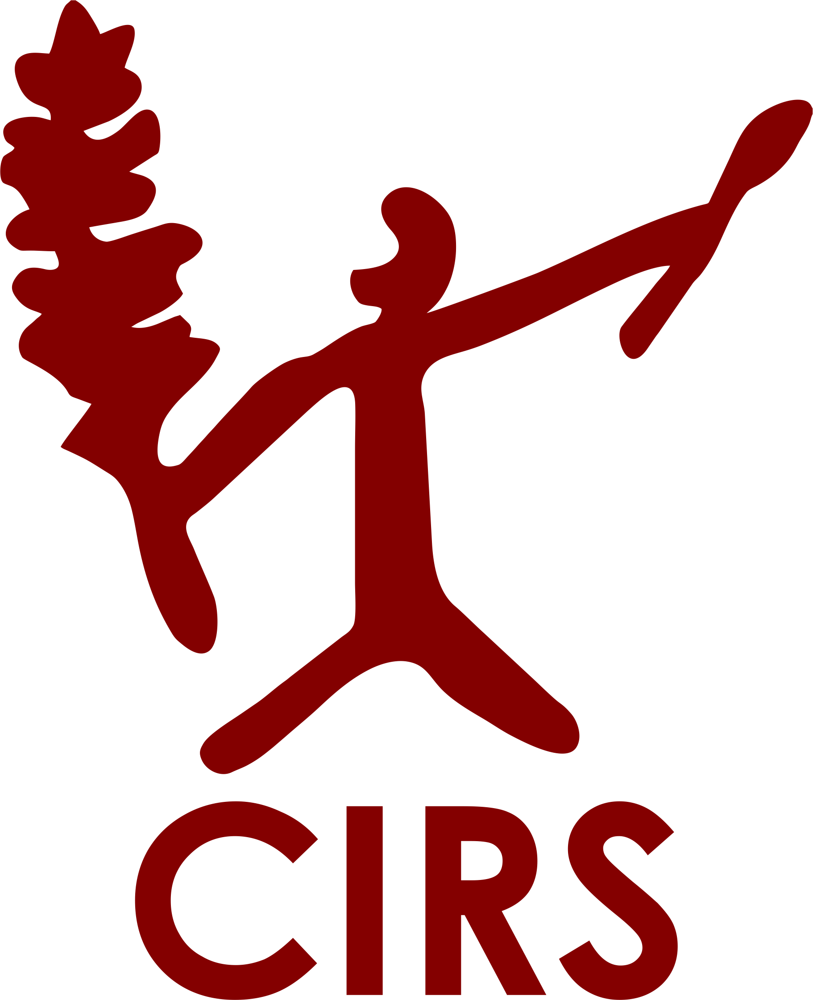
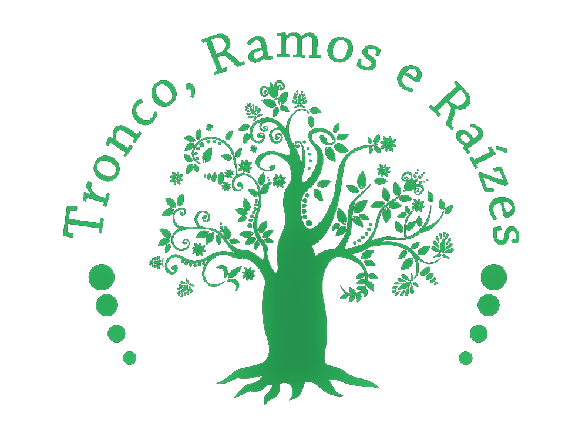
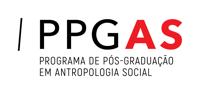

ESTAMOS EM CONSTRUÇÃO
O Museu virtual TRONCO, RAMOS E RAIZES é resultado do projeto de extensão
desenvolvido no Departamento de Antropologia aprovado pelo PROEX/UFRN. Dá continuidade às
ações patrimoniais realizadas desde 2012 no Seridó, que enfatizam o combate à discriminação
racial e tem como estratégia a valorização do patrimônio histórico e cultural indígena e
afrobrasileiro.
A partir de 2017, amplia suas ações a todo Rio Grande do Norte e a áreas periurbanas onde há manifestações culturais e memórias vivas. A proposta é colocar em discussão a presença indígena e afrobrasileira no Rio Grande do Norte, através da divulgação das ações já realizadas, registrar, apresentar e discutir conjuntamente os dados históricos, arqueológicos e culturais coletados, além de sensibilizar agentes locais das comunidades envolvidas. Também, visa incentivar a produção e divulgação do conhecimento, disponibilizar material didático, dando continuidade às pesquisas realizadas sobre memória, patrimônio cultural (material e imaterial), identidade, e às ações de educação patrimonial (guias culturais, exposições itinerantes, documentários, cursos, oficinas, registros orais, sonoros e visuais).
Em 2022, iniciamos o projeto SABERES SUSTENTÁVEIS, integrado ao museu TRONCO
RAMOS E RAIZES, desenvolvido na Vila de Ponta Negra e Pium, territórios cultural,
socialmente e historicamente ligados. O projeto visa sensibilizar a população local para a
necessidade da valorização dos saberes locais e da preservação do meio ambiente. Conheça o
projeto acessando o link:
http://www.museutronco.cchla.ufrn.br/saberessustentaveis/